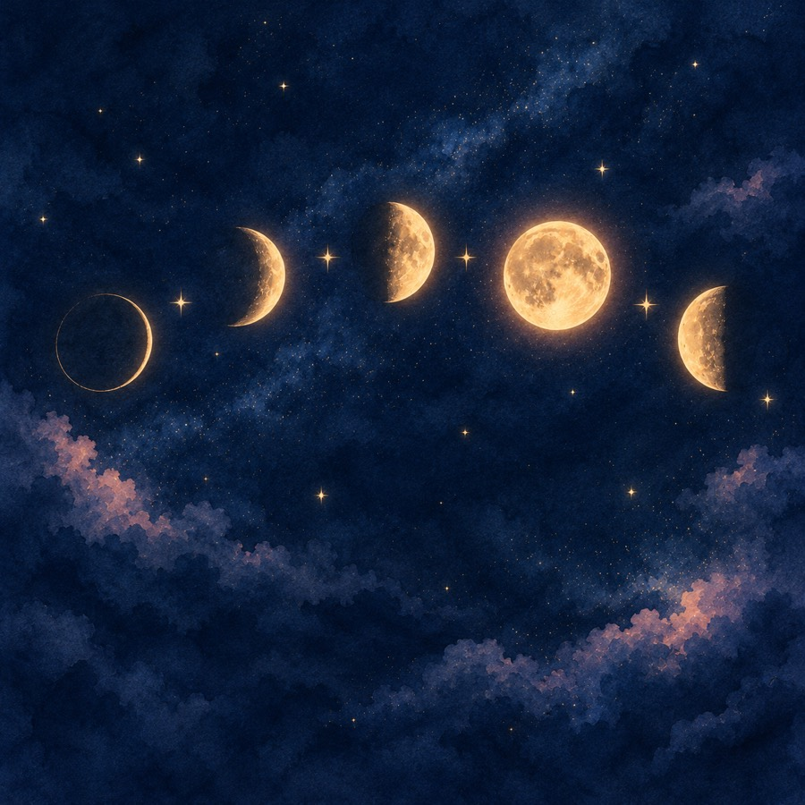

WATASHI BIYORI
無料の月のことのは鑑定
送るか待つかで、指が止まる夜に。
今の気持ちを月の形にたとえて、3枚のカードで一緒に整えます。
WORRIES
こんな夜はありませんか
- 既読のまま、返事が来ない
- 送りたいのに、重いと思われそうで送れない
- ふたりの温度差がつらい
- 会いたい気持ちが、あふれそう
- もう、送りすぎてしまったかもしれない
WHO
わたし日和について
好きな人にLINEを送りすぎて、ブロックされたことがあります。
返事が来ないのが不安で、送り続けた。長い文で気持ちを全部ぶつけて、引かれた。待ちきれなくて、催促してしまった。
だから、送るか待つかで止まる夜の苦しさが分かります。
わたし日和は、相手の気持ちを言い切りません。決めるのは、あなたです。
READING
鑑定でお伝えすること

- カードに出た、あの人の今の気持ちの傾向
- 今のあなたの気持ちを、月の形にたとえると
- あなたが選んだ3枚のカードが映していること
- 送るか待つかの目安と、気をつけたいこと
- あなたが選べる、小さな一歩とラッキーアイテム
HOW
受け取り方
- 下のボタンから、わたし日和のLINE「月の相談室」に登録
- トークに【ことのは鑑定】と送る
届いた質問（呼び名・最近あったこと・今の気持ち・カードに聞きたいこと・1〜78から好きな数字を3つ）に答えて送ってください。 - 3日以内に、LINEで鑑定文が届きます
ひとりずつ読んでお届けします。LINEに残るので、何度でも読み返せます。
今週の受付：11/2（月）〜11/8（日）
先着10名さま（おひとり1回・定員になったら締め切ります）
無料の月のことのは鑑定を受けるLINE「月の相談室」に登録して【ことのは鑑定】と送るだけ
先着10名さま（おひとり1回・定員になったら締め切ります）
Q&A
よくある質問
本当に無料ですか？
はい、無料です（おひとり1回）。鑑定のあとに、もっと深く視る有料の鑑定をご案内することがありますが、申し込むかどうかはあなたが決めてください。
占いをあまり信じていなくても大丈夫？
大丈夫です。カードは未来を決めるものではなく、あなたが次の一歩を選ぶための材料としてお届けします。
どんな相談ができますか？
恋愛のご相談（片思い・お付き合い中・連絡が減った・復縁など）が中心です。病気・お金・法律の判断はお伝えできないので、専門の窓口にもご相談ください。
お受けできない相談はありますか？
次の4つは、わたし日和でお受けできる範囲を超えるため、鑑定はお受けしていません。
・命に関わること
・病気の診断や治療
・お金の貸し借りや投資の判断
・誰かを不幸にしてほしい、別れさせてほしいという依頼
お申し込みがあった時は、専門の窓口をご案内します。あなたのことを突き放したいわけではないので、恋のことで迷った時は、またいつでも頼ってくださいね。
いつ届きますか？
受付から3日以内に、LINEでお届けします。
LINEの配信を止めたい時は？
いつでもトークに「停止」と送ってください。ブロックしていただいても大丈夫です。
※鑑定は、占いによる個人的な読み解きです。相手の気持ちや未来を言い切ったり、結果を約束したりするものではありません。
わたし日和